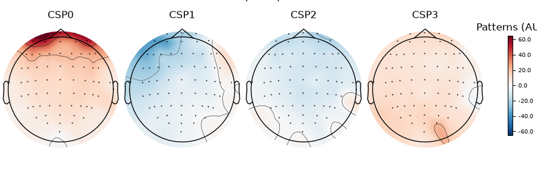
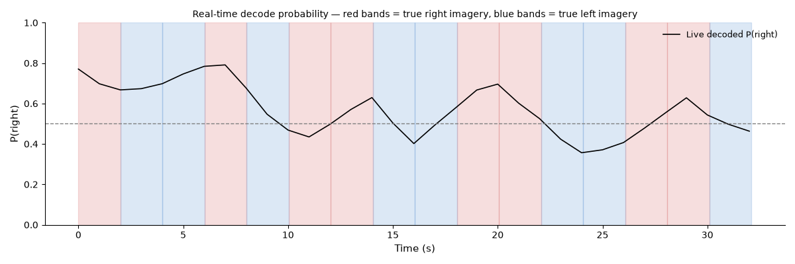

Note
Go to the end to download the full example code.
Real-time motor imagery decoding with CSP#
Adapts MNE’s Motor imagery decoding from EEG data using the Common Spatial Pattern (CSP) tutorial to MNE-RT’s real-time architecture, using the PhysioNet EEG Motor Movement/Imagery Dataset:
Load left- vs. right-hand imagery epochs (runs 6, 10, 14, subject 1).
Fit
RTDecode(CSP + logistic regression) on most of the epochs, holding a few epochs per class out for the live demo below.Cross-validate the offline classification accuracy and plot the learned CSP spatial patterns — exactly the core content of the MNE tutorial above.
Concatenate the held-out epochs into one continuous array (known, deterministic left/right timeline) and stream it through
connect_to_array()— no LSL networking required.Attach the fitted decoder via
set_decoder()and runrecord_main()withmodality=["decode"]: the classifier is queried once per acquisition window, live, exactly as it would be during a real closed-loop BCI session.Plot the live decoded probability trace against the true left/right timeline to confirm the real-time classifier tracks it.
Note
This is a small, single-subject demo (45 trials total) meant to show the real-time decoding mechanics working end-to-end — not a benchmark of CSP decoding accuracy. Expect modest offline accuracy; see MNE’s tutorial for a fuller discussion of CSP decoding performance.
Note
Downloads ~15 MB of data on first run via
mne.datasets.eegbci.load_data().
Load PhysioNet EEGBCI motor imagery data#
import tempfile
from pathlib import Path
import matplotlib.pyplot as plt
import mne
import numpy as np
from sklearn.model_selection import ShuffleSplit, cross_val_score
from mne_rt import RTDecode, RTStream
mne.set_log_level("WARNING")
SUBJECT = 1
RUNS = [6, 10, 14]
files = mne.datasets.eegbci.load_data(SUBJECT, RUNS, update_path=True, verbose=False)
raws = [mne.io.read_raw_edf(f, preload=True, verbose=False) for f in files]
raw = mne.concatenate_raws(raws)
mne.datasets.eegbci.standardize(raw)
raw.set_montage(mne.channels.make_standard_montage("standard_1005"), on_missing="ignore")
raw.filter(l_freq=1.0, h_freq=40.0, verbose=False)
SFREQ = raw.info["sfreq"]
print(f"Channels: {raw.info['nchan']} | sfreq: {SFREQ:.0f} Hz")
Channels: 64 | sfreq: 160 Hz
Extract fixed-length imagery epochs#
Unlike NF feature extraction (which can use any window length), a decoder
must be fit and queried on windows of the same duration — here 2 s,
starting 1 s after the imagery cue to avoid the cue-onset transient. This
duration must later match record_main’s winsize.
events, event_id = mne.events_from_annotations(raw, verbose=False)
WINSIZE = 2.0
TMIN = 1.0
TMAX = TMIN + WINSIZE
epochs = mne.Epochs(
raw,
events,
event_id={"left": event_id["T1"], "right": event_id["T2"]},
tmin=TMIN,
tmax=TMAX,
baseline=None,
preload=True,
verbose=False,
)
print(f"Epochs: {len(epochs)} | left={len(epochs['left'])} right={len(epochs['right'])}")
Epochs: 45 | left=21 right=24
Hold out epochs for the live streaming demo#
A few epochs per class are set aside now, before fitting, and streamed live further down — the decoder never sees them during calibration.
N_TEST_PER_CLASS = 8
train_idx, test_idx = [], []
for label in ("left", "right"):
idx = np.where(epochs.events[:, 2] == epochs.event_id[label])[0]
test_idx.extend(idx[:N_TEST_PER_CLASS])
train_idx.extend(idx[N_TEST_PER_CLASS:])
epochs_train = epochs[sorted(train_idx)]
epochs_test = epochs[sorted(test_idx)]
X_train = epochs_train.get_data()
y_train = np.where(epochs_train.events[:, 2] == epochs.event_id["left"], "left", "right")
Fit RTDecode and cross-validate offline#
RTDecode assembles the exact CSP + classifier
sklearn.pipeline.Pipeline from the MNE tutorial internally
(decoder.pipeline), so it plugs directly into
sklearn.model_selection.cross_val_score for offline validation.
decoder = RTDecode(info=epochs.info, spatial_filter="csp", n_components=4)
cv = ShuffleSplit(n_splits=5, test_size=0.2, random_state=0)
scores = cross_val_score(decoder.pipeline, X_train, y_train, cv=cv, n_jobs=1)
print(f"Cross-validated accuracy: {scores.mean():.2f} +/- {scores.std():.2f} (chance = 0.50)")
decoder.fit(X_train, y_train, verbose=False)
Cross-validated accuracy: 0.47 +/- 0.12 (chance = 0.50)
<RTDecode | spatial_filter='csp', estimator=LogisticRegression, fitted>
Figure 1 — CSP spatial patterns#
The most discriminative spatial filters typically localise over sensorimotor cortex (around C3/C4), matching the MNE tutorial’s figure.
csp = decoder.pipeline.named_steps["csp"]
fig1 = csp.plot_patterns(
epochs.info,
components=range(csp.n_components),
ch_type="eeg",
units="Patterns (AU)",
size=1.5,
)
fig1.suptitle("CSP spatial patterns", y=1.05)

Text(0.5, 1.05, 'CSP spatial patterns')
Real-time decoding via connect_to_array#
The held-out test epochs are concatenated, in order, into one continuous
array — this gives an exactly-known left/right timeline to validate the
live decoder against, with no LSL networking or recorded file required
(see connect_to_array()).
test_data = epochs_test.get_data()
test_labels = np.where(epochs_test.events[:, 2] == epochs.event_id["left"], "left", "right")
stream_data = np.concatenate(list(test_data), axis=1)
n_samples_per_segment = test_data.shape[2]
tmp_dir = Path(tempfile.mkdtemp(prefix="mne_rt_decode_demo_"))
nf = RTStream(
subject_id="decode01",
session="01",
subjects_dir=str(tmp_dir),
montage=None,
data_type="eeg",
verbose=False,
)
nf.connect_to_array(stream_data, epochs.info, chunk_size=16, n_repeat=1)
nf.set_decoder(decoder)
duration = stream_data.shape[1] / SFREQ
nf.record_main(
duration=duration,
modality=["decode"],
winsize=WINSIZE,
show_nf_signal=False,
show_raw_signal=False,
show_topo=False,
save_raw=False,
verbose=False,
)
proba = np.asarray(nf.nf_data["decode"])
hop_s = WINSIZE * 0.5 # record_main uses 50% window overlap
n_correct = 0
for i, label in enumerate(test_labels):
t0, t1 = i * n_samples_per_segment / SFREQ, (i + 1) * n_samples_per_segment / SFREQ
seg = proba[int(t0 / hop_s) : int(t1 / hop_s)]
predicted = "right" if seg.mean() >= 0.5 else "left"
n_correct += predicted == label
print(
f"Live segment-level accuracy: {n_correct}/{len(test_labels)} "
f"({100 * n_correct / len(test_labels):.0f} %)"
)
Live segment-level accuracy: 9/16 (56 %)
Figure 2 — live decoded probability vs. the true timeline#
Grey/white bands mark the true left/right segments in the streamed test
data; the trace is RTDecode’s live P(right) for each acquisition
window, queried in real time by record_main().
t = np.arange(len(proba)) * hop_s
fig2, ax = plt.subplots(figsize=(12, 4))
for i, label in enumerate(test_labels):
t0 = i * n_samples_per_segment / SFREQ
t1 = (i + 1) * n_samples_per_segment / SFREQ
ax.axvspan(t0, t1, alpha=0.15, color="#C62828" if label == "right" else "#1565C0")
ax.plot(t, proba, color="black", lw=1.2, label="Live decoded P(right)")
ax.axhline(0.5, color="grey", ls="--", lw=1.0)
ax.set_xlabel("Time (s)", fontsize=11)
ax.set_ylabel("P(right)", fontsize=11)
ax.set_title(
"Real-time decode probability — red bands = true right imagery, blue bands = true left imagery",
fontsize=10,
)
ax.set_ylim(0, 1)
ax.legend(fontsize=9, frameon=False, loc="upper right")
ax.spines[["top", "right"]].set_visible(False)
fig2.tight_layout()

Total running time of the script: (1 minutes 31.589 seconds)